sim1 = pd.read_csv("data/sim1.csv")Model basics
R for Data Science by Wickham & Grolemund
Introduction

The goal of a model is to provide a simple low-dimensional summary of a dataset. Ideally, the model will capture true “signals” (i.e. patterns generated by the phenomenon of interest), and ignore “noise” (i.e. random variation that you’re not interested in).
* physics: models for the physical world
이상적으로, 모형(model)이 현상으로부터 노이즈가 제거된 진정한 신호를 잡아내 주기를 기대.


예를 들어, 캐럿과 가격의 진정한 관계를 모델로 표현
Linear model: y = ax + b
log(price) = a * log(carat) + b
나머지 residuals은 노이즈?
이 책에서는
predictive models(예측 모형)만을 다룸 (supervised learning)
data discovery models은 machine/statistical learning에서… (unsupervised learning)
예측이 아닌, 데이터에 내재하는 흥미로운 관계들을 발견; ex. clustering analysis
Statistical Learning vs. Machine Learning
Machine learning arose as a subfield of Artificial Intelligence.
Statistical learning arose as a subfield of Statistics.
There is much overlap — both fields focus on supervised and unsupervised problems:
- Machine learning has a greater emphasis on large scale applications and prediction accuracy.
- Statistical learning emphasizes models and their interpretability, and precision and uncertainty.
But the distinction has become more and more blurred, and there is a great deal of “cross-fertilization”.
Machine learning has the upper hand in Marketing!
Trevor Hastie and Robert Tibshirani, An Introduction to Statistical LearningHypothesis generation vs. hypothesis confirmation
이 책에서 모델은 탐색적 데이터 분석(EDA)의 한 도구로 사용하나 전통적으로 모델은 가설을 검정하거나 모집단에 대한 추론을 위해 사용됨
- Each observation can either be used for exploration or confirmation, not both.
- You can use an observation as many times as you like for exploration, but you can only use it once for confirmation. As soon as you use an observation twice, you’ve switched from confirmation to exploration.
you should never sell an exploratory analysis as a confirmatory analysis because it is fundamentally misleading.
통계적 검정에 관심이 있다면, 분석 전에 다음과 같이 데이터를 나누는 것을 고려
- 60% of your data goes into a training (or exploration) set. You’re allowed to do anything you like with this data: visualise it and fit tons of models to it.
- 20% goes into a query/validation set. You can use this data to compare models or visualisations by hand, but you’re not allowed to use it as part of an automated process.
- 20% is held back for a test set. You can only use this data ONCE, to test your final model. (최종 모형의 테스트)
Model basics
우선, simulated 데이터셋으로 모형을 세우는 방식을 들여다보면서 본질적인 부분을 익히고자 함.
모델은 두 부분으로 나뉘는데
A family of models를 정의: generic 패턴을 표현해 줄 수 있는 모델 타입
예를 들어,
만약, 선형적인 관계라면 선형 모델인 \(y = a_2 x + a_1\)
곡선 관계라면 가령, \(y = a_2 x^{a_1}\)
\(a_1, a_2\)는 패턴을 잡아낼 수 있도록 변하는 파라미터
A fitted model을 생성: 데이터에 가장 가까운(적합한) 파라미터에 해당하는 특정 모델을 선택: “fit a model to data”
예를 들어,
- \(y = 3x+7\)
- \(y = 9x^{1.6}\)
A fitted model은 a family of models 중에 데이터에 가장 가까운 모델임
- 이는 소위 “best” model일 뿐
- “good” model임을 뜻하지 않고, “true” model임을 뜻하는 것은 더더욱 아님
All models are wrong, but some are useful.
The goal of a model is not to uncover truth, but to discover a simple approximation that is still useful.
A simple model
Data: sim1.csv
x y
0 1 4.20
1 1 7.51
2 1 2.13
3 2 8.99
.. .. ...
26 9 21.13
27 10 24.97
28 10 23.35
29 10 21.98
[30 rows x 2 columns]
- 패턴: 강한 선형 관계
- 선형 모델 family인 \(y = a_2 x + a_1\)을 세운 후
- 무수히 많은 \(a_1, a_2\)의 값들 중 위 데이터에 가장 가까운 값을 찾음
- 그 예로, 임의로 250개의 선형 모델을 그려보면,

이 선형모델 중 데이터에 가장 가까운 모델을 찾고자 하는데, 데이터와 모델과의 거리를 정의해야 함.
\(d =|~data - model~|\)
예) 모델과 데이터의 수직 거리(residuals)의 총체

Model 1.1: \(y = 1.5x+7\)의 경우, 이 모델이 예측하는 값들
array([ 8.5, 8.5, 8.5, 10. , 10. , 10. , 11.5, 11.5, 11.5, 13. , 13. ,
13. , 14.5, 14.5, 14.5, 16. , 16. , 16. , 17.5, 17.5, 17.5, 19. ,
19. , 19. , 20.5, 20.5, 20.5, 22. , 22. , 22. ])
Model evaluation: RMSE, MAE
The prediction accuracy of the models
Root-mean-squared deviation/error: \(RMSE = \displaystyle\sqrt{\frac{1}{n} \sum_{i=1}^{n}{(y_i -\hat y_i)^2}}\)
Mean absolute error: \(MAE = \displaystyle\frac{1}{n} \sum_{i=1}^{n}{|~y_i -\hat y_i~|}\) : 이상치에 덜 민감함
Model 1.1의 RMSE:
2.67즉, 데이터셋 sim1과 model 1.1 과의 거리 \(d=|~sim1 -model1~| = 2.67\)
위의 250개의 모델에 대해 각각 거리를 구하면
a1 a2 dist
0 21.79 -2.92 17.42
1 -2.83 -0.57 22.83
2 -6.39 2.16 10.26
3 13.08 -0.89 11.41
.. ... ... ...
246 37.78 3.83 43.68
247 0.51 4.19 10.38
248 27.94 -0.84 11.59
249 27.93 2.45 25.99
[250 rows x 3 columns]이 중 제일 좋은 모델(dist가 최소) 10개의 모델을 그리면,

250개의 모델 중 10개의 모델을 다음과 같은 \((a1, a2)\) 평면으로 살펴보면, 즉, model space에서 살펴보면
- 오렌지 색은 위에서 구한 10 best models

점차 촘촘한 간격으로 grid search를 하면서 거리를 최소로 하는 모델을 찾아가는 것이고, 실제로는 Newton-Raphson search를 통해 최소값을 구하는 알고리즘을 통해 구할 수 있음.
즉, 거리를 최소로 하는 a1, a2를 찾으면,
from scipy.optimize import minimize
minimize(measure_distance, [0, 0], args=(sim1)).xarray([4.22, 2.05])
Summary
sim1을 이용한 위의 예는 모든 모델에 적용될 수 있음
- 즉, \(y = f(x1, x2,...)\) 형태의 a family of models을 구성한 후
- 모델과 데이터와의 거리 \(d =|~data - model~|\)를 정의한 후
- 거리 \(d\)가 최소가 되는 파라미터를 구하면, a family of models 중 best model을 만들 수 있음
- 새로운 a family of models을 구성해서 위를 반복하면, 여러 다른 모델들을 비교할 수 있음
앞서 다룬 선형 모형, linear (regression) model은 일반적인 \(\hat{y} = a_0 + a_1 x_1 + a_2 x_2 + ~... ~ + a_n x_n\) 형태를 띄고,
앞의 예는 \(n=1\) 에 해당하며, \(\hat{y} =a_0 +a_1x_1\)에 대해서
간결하게 Wilkinson-Rodgers notation이라고 부르는 symbolic notation을 사용하여 접근할 수 있고, 통계에서 주로 사용됨.
Formula y ~ x는 \(\hat{y} =a_0 +a_1x\)으로 해석되어 처리됨.
모형과 데이터의 거리인 RMSE가 최소가 되도록 하는 ordinary least square (OLS) estimate인 \(a_0, a_1\)을 구하면, best model을 구할 수 있고,
그 fitted line은 \(\hat{y} = 4.22 + 2.05x\)
from statsmodels.formula.api import ols sim1_mod = ols("y ~ x", data = sim1) sim1_mod.fit().params # 모델의 parameter 즉, coefficients를 내줌 # Intercept 4.22 # x 2.05 # 위에서 구한 파라미터값과 동일함(참고) Linear models의 경우 위에서 처럼 optimization을 이용하지 않고 방정식의 해를 구하듯 exact form으로 최소값을 구함
\(n=2\) 인 경우, 즉 두 변수 x1, x2로 y를 예측하는 경우,
Formula
y ~ x1 + x2는 모형 \(\hat{y} = a_0 +a_1x_1 + a_2x_2\) 을 의미ols("y ~ x1 + x2", data = df)예를 들어,
houses = sm.datasets.get_rdataset("SaratogaHouses", "mosaicData").data mod_houses = ols("price ~ livingArea + bedrooms", data=houses) mod_houses.fit().params # Intercept 36667.90 # livingArea 125.40 # bedrooms -14196.77\(\widehat{price} = 36668.9 + 125.4 \cdot livingArea - 14196.8 \cdot bedrooms\)
이 계수들의 의미를 파악하는 것이 통계에서 매우 중요한 주제임.
위와 같이 2개의 예측변수로 평면꼴의 선형모형을 세운다면, 다음과 같은 fitted plane을 구할 수 있음.
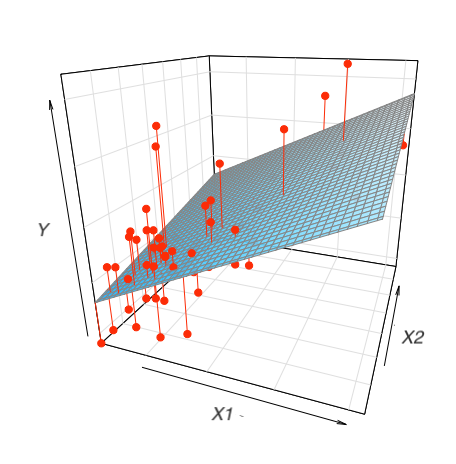
Formula를 활용할 수 있는 패키지
statsmodels는 formula notation으로 모형을 세우는 것을 지원함: statsmodels
sklearn은 formula notation을 직접 지원하지 않지만,patsy패키지를 이용하여 design matrix를 직접 얻어 적용할 수 있음: patsy in scikit-learn 또는 PatsyTransformer
# patsy
from patsy import dmatrices # design matrix
formula = "price ~ livingArea + bedrooms"
y, X = dmatrices(formula, data=houses, return_type="dataframe")
display(y, X) price
0 132500.00
1 181115.00
2 109000.00
3 155000.00
... ...
1724 285000.00
1725 194900.00
1726 125000.00
1727 111300.00
[1728 rows x 1 columns] Intercept livingArea bedrooms
0 1.00 906.00 2.00
1 1.00 1953.00 3.00
2 1.00 1944.00 4.00
3 1.00 1944.00 3.00
... ... ... ...
1724 1.00 2564.00 4.00
1725 1.00 1099.00 2.00
1726 1.00 1225.00 3.00
1727 1.00 1959.00 3.00
[1728 rows x 3 columns]# scikit-learn
from sklearn.linear_model import LinearRegression
formula = "price ~ livingArea + bedrooms - 1"
y, X = dmatrices(formula, data=houses, return_type="dataframe")
mod = LinearRegression().fit(X, y.price)
print(f"coefs for predictors: {mod.coef_}")
print(f"intercept: {mod.intercept_}")coefs for predictors: [ 125.4 -14196.77]
intercept: 36667.89513634294Visualising models
Fitted models을 이해하기 위해 모델이 예측하는 부분(prediction)과 모델이 놓친 부분(residuals)을 시각화해서 보는 것이 유용함
Predictions: the pattern that the model has captured
우선, 예측 변수들의 데이터 값을 커버하는 grid를 구성
sim1 x y
0 1 4.20
1 1 7.51
2 1 2.13
.. .. ...
27 10 24.97
28 10 23.35
29 10 21.98
[30 rows x 2 columns]# create a grid for the range of x sim1
grid = pd.DataFrame(dict(x=np.linspace(sim1.x.min(), sim1.x.max(), 10)))모델에 grid를 입력하여 prediction값을 추가
# a model for sim1
sim1_mod = ols("y ~ x", data=sim1).fit()
grid["pred"] = sim1_mod.predict(grid) # column 이름이 매치되어야 함
grid x pred
0 1.00 6.27
1 2.00 8.32
2 3.00 10.38
3 4.00 12.43
.. ... ...
6 7.00 18.58
7 8.00 20.63
8 9.00 22.68
9 10.00 24.74
[10 rows x 2 columns]
fitted values
sim1["fitted"] = sim1_mod.fittedvalues
sim1["fitted2"] = sim1_mod.predict(sim1.x)
sim1
# x y fitted fitted2
# 0 1 4.20 6.27 6.27
# 1 1 7.51 6.27 6.27
# 2 1 2.13 6.27 6.27
# .. .. ... ... ...
# 27 10 24.97 24.74 24.74
# 28 10 23.35 24.74 24.74
# 29 10 21.98 24.74 24.74
# [30 rows x 4 columns]prediction을 시각화
(
so.Plot(sim1, x='x', y='y')
.add(so.Dot(color=".6"))
.add(so.Line(), x=grid.x, y=grid.pred) # prediction!
.layout(size=(5, 4))
)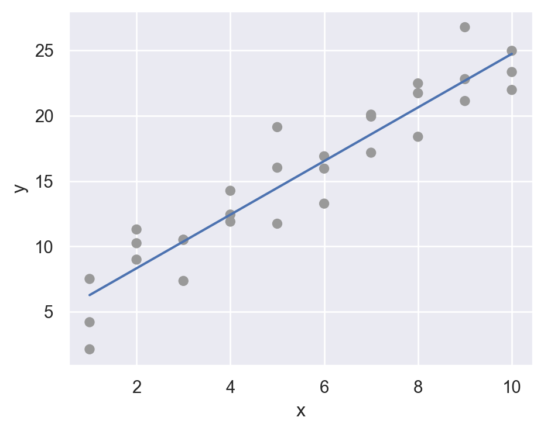
Residuals: what the model has missed.
\(e = Y - \hat{Y}\) : 관측값 - 예측값
sim1["resid"] = sim1_mod.resid # Y - Y_hatsim1 x y fitted resid
0 1 4.20 6.27 -2.07
1 1 7.51 6.27 1.24
2 1 2.13 6.27 -4.15
3 2 8.99 8.32 0.66
.. .. ... ... ...
26 9 21.13 22.68 -1.56
27 10 24.97 24.74 0.23
28 10 23.35 24.74 -1.39
29 10 21.98 24.74 -2.76
[30 rows x 4 columns]우선, residuals의 분포를 시각화해서 살펴보면,
(
so.Plot(sim1, x='resid')
.add(so.Line(), so.Hist(binwidth=.4))
.layout(size=(5, 4))
)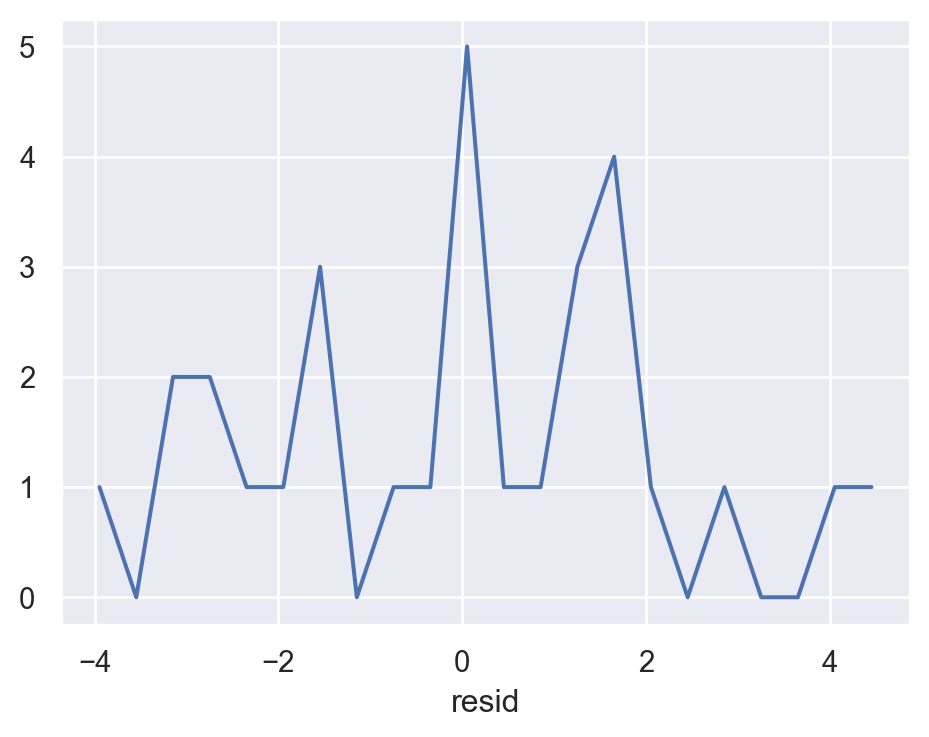
예측 변수와 residuals의 관계를 시각화해서 보면,
(
so.Plot(sim1, x='x', y='resid')
.add(so.Dot())
.add(so.Line(), so.PolyFit(5))
.layout(size=(5, 4))
)
위의 residuals은 특별한 패턴을 보이지 않아야 모델이 데이터의 패턴을 잘 잡아낸 것으로 판단할 수 있음.
아래는 원래 데이터와 일차 선형 모형에 대한 예측값의 관계를 시각화한 것
Residuals에 패턴이 보이는 경우

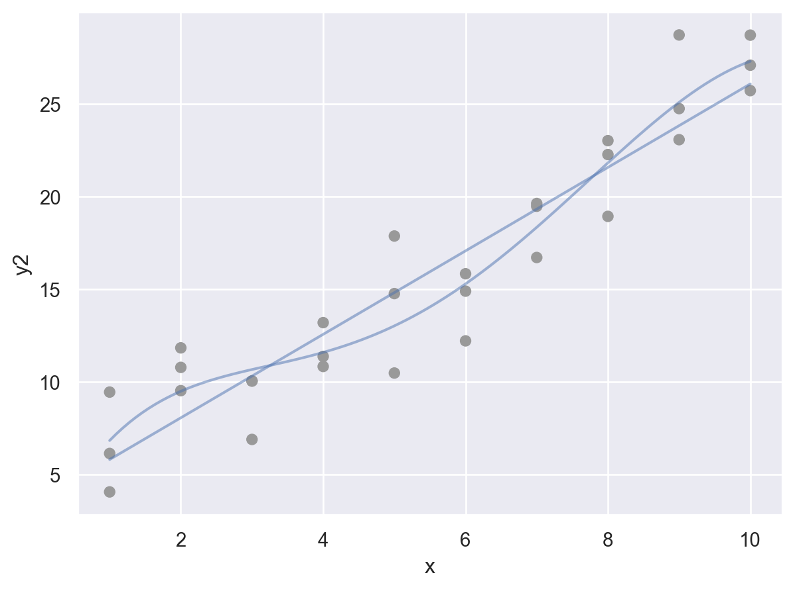
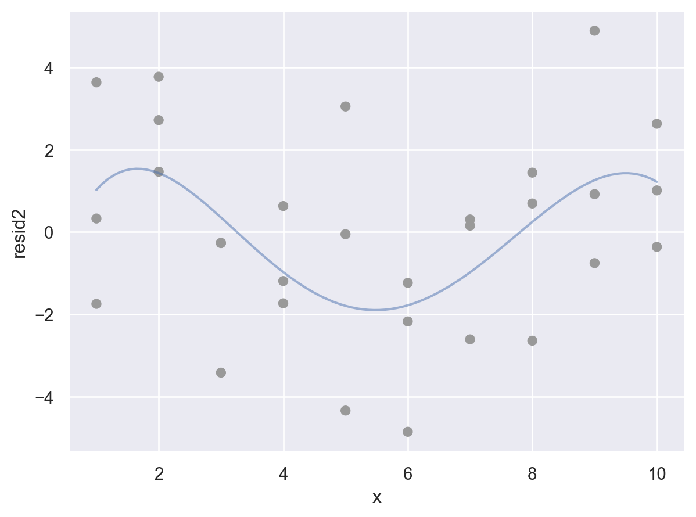
Formulas and model families
This formula notation is called “Wilkinson-Rogers notation”, and was initially described in Symbolic Description of Factorial Models for Analysis of Variance by G. N. Wilkinson and C. E. Rogers
자세한 formula notation에 대해서는 patsy 참고
Categorical variables
카테고리 변수가 predictor인 경우 복잡해짐
- formula
y ~ sex의 경우, \(y=a_0 +a_1sex\) 로 변환될 수 없음 (성별을 연산할 수 없음) - 실제로, formula는 \(sex[T.male]\) 라는 indicator/dummy variable을 새로 만들어 membership을 나타내 줌: dummy-coding 또는 one-hot encoding 이라고 부름.
- \(y=a_0 +a_1sex[T.male]\) (남성일 때, \(sex[T.male]=1\), 그렇지 않은 경우 0)
Patsy의 formula는 편리하게 범주형 변수를 알아서 처리해 주기 때문에 범주형 변수의 복잡한 처리과정을 걱정할 필요가 없음.
다른 방식으로는 pandas의 pd.get_dummies()나 scikit-learn의 OneHotEncoder를 이용할 수 있음
df = pd.DataFrame({"sex": ["male", "female", "male"], "response": [10, 21, 13]})
df sex response
0 male 10
1 female 21
2 male 13# Design matrix
from patsy import dmatrices
y, X = dmatrices('response ~ sex', data=df, return_type="dataframe")
X Intercept sex[T.male]
0 1.00 1.00
1 1.00 0.00
2 1.00 1.00
Note
Coding의 순서나 방식을 바꾸려면, patsy 패키지의 C()를 이용하거나 pandas의 Categorical type을 활용
y, X = dmatrices('response ~ C(sex, levels=["male", "female"])', data=df, return_type="dataframe")
X
# Intercept C(sex, levels=["male", "female"])[T.female]
# 0 1.00 0.00
# 1 1.00 1.00
# 2 1.00 0.00Categorical type으로 변환하면,
df["sex"] = pd.Categorical(df["sex"], categories=["male", "female"])
y, X = dmatrices('response ~ sex', data=df, return_type="dataframe")
X
# Intercept sex[T.female]
# 0 1.00 0.00
# 1 1.00 1.00
# 2 1.00 0.00- 세 개의 범주인 경우: 가령, 아래와 같이 3개의 범주를 가졌다면, 두 개의 변수
sex[T.male],sex[T.neutral]가 생성 - 일반적으로
n개의 범주를 가진 변수인 경우n-1개의 변수가 생성
df = pd.DataFrame({"sex": ["male", "female", "male", "neutral"], "response": [10, 21, 13, 5]})
df sex response
0 male 10
1 female 21
2 male 13
3 neutral 5y, X = dmatrices("response ~ sex", data=df, return_type="dataframe")
X Intercept sex[T.male] sex[T.neutral]
0 1.00 1.00 0.00
1 1.00 0.00 0.00
2 1.00 1.00 0.00
3 1.00 0.00 1.00pandas의 get_dummies를 이용하면,
pd.get_dummies(df["sex"], drop_first=True, prefix="sex") sex_male sex_neutral
0 True False
1 False False
2 True False
3 False Truescikit-learn의 OneHotEncoder를 이용하면,
from sklearn.preprocessing import OneHotEncoder
# one-hot encoding for sex in df
enc = OneHotEncoder(sparse_output=False, drop="first")
enc.fit_transform(df[["sex"]])array([[1., 0.],
[0., 0.],
[1., 0.],
[0., 1.]])enc.get_feature_names_out()array(['sex_male', 'sex_neutral'], dtype=object)실제 예를 들어서 살펴보면,
Data: sim2.csv
sim2 = pd.read_csv("data/sim2.csv")
sim2 x y
0 a 1.94
1 a 1.18
2 a 1.24
3 a 2.62
.. .. ...
36 d 3.07
37 d 2.13
38 d 2.49
39 d 0.30
[40 rows x 2 columns](
so.Plot(sim2, x='x', y='y')
.add(so.Dots())
.layout(size=(5, 4))
)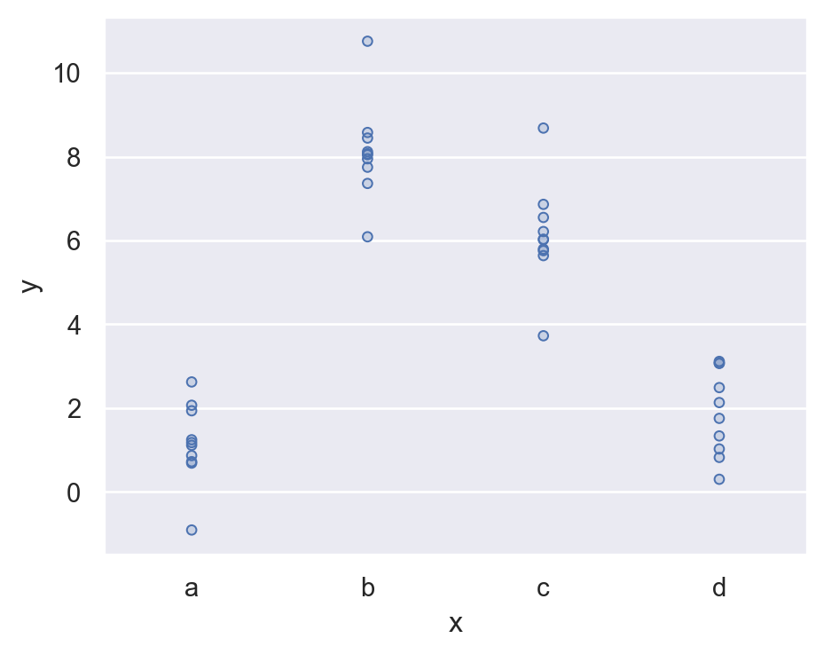
Fit a model to it, and generate predictions:
mod2 = ols('y ~ x', data=sim2).fit()
mod2.paramsIntercept 1.15
x[T.b] 6.96
x[T.c] 4.98
x[T.d] 0.76
dtype: float64grid = pd.DataFrame({"x": list("abcd")})
grid["pred"] = mod2.predict(grid)
grid x pred
0 a 1.15
1 b 8.12
2 c 6.13
3 d 1.91예측값을 시각화하면,
각 카테고리 별로 평균값으로 예측… why?
(
so.Plot(sim2, x='x', y='y')
.add(so.Dots())
.add(so.Dot(color="red"), x=grid.x, y=grid.pred)
.layout(size=(5, 4))
)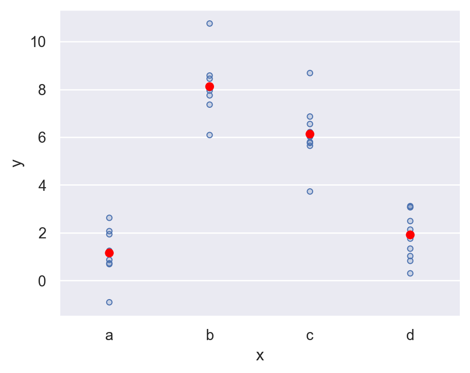
fitted model의 파라미터를 보면,
formula y ~ x는 실제 \(\hat{y} = a_0 + a_1x[T.b] + a_2 x[T.c] + a_3 x[T.d]\) 으로 해석
y, X = dmatrices("y ~ x", data=sim2, return_type="dataframe")
pd.concat([X, sim2["x"]], axis=1).sample(8) Intercept x[T.b] x[T.c] x[T.d] x
36 1.00 0.00 0.00 1.00 d
6 1.00 0.00 0.00 0.00 a
30 1.00 0.00 0.00 1.00 d
32 1.00 0.00 0.00 1.00 d
25 1.00 0.00 1.00 0.00 c
12 1.00 1.00 0.00 0.00 b
1 1.00 0.00 0.00 0.00 a
19 1.00 1.00 0.00 0.00 bdiamonds 데이터셋에 적용해 보면,
diamonds = sm.datasets.get_rdataset("diamonds", "ggplot2").data
diamonds["cut"] = pd.Categorical(
diamonds["cut"],
categories=["Fair", "Good", "Very Good", "Premium", "Ideal"],
ordered=True
)mod2 = ols('price ~ cut', data=diamonds).fit()
mod2.paramsIntercept 4358.76
cut[T.Good] -429.89
cut[T.Very Good] -377.00
cut[T.Premium] 225.50
cut[T.Ideal] -901.22
dtype: float64\(\widehat{price}\) = 4358.8 - 429.9· cut[T.Good] - 377·cut[T.Very Good] + 255.5·cut[T.Premuim] - 901.2· cut[T.Ideal]
- 절편 4358: 모든 dummy variables의 값이 모두 0일 때, 즉 Fair cut일 때의 평균 가격
cut[T.Good]= 1,cut[T.Very Good]= 0,cut[T.Premium]= 0,cut[T.Ideal]= 0 일 때, 즉 Good cut일 때의 평균 가격은 4358.8 - 429.9 = 3928.9- 즉, 각 기울기는 Fair cut과 해당 cut의 평균 가격의 차이를 의미
예측치는 아래에서 보이듯 평균값으로 예측
grid = pd.DataFrame({"cut": ["Fair", "Good", "Very Good", "Premium", "Ideal"]})
grid["pred"] = mod2.predict(grid)
grid cut pred
0 Fair 4358.76
1 Good 3928.86
2 Very Good 3981.76
3 Premium 4584.26
4 Ideal 3457.54diamonds.groupby("cut")["price"].mean()cut
Fair 4358.76
Good 3928.86
Very Good 3981.76
Premium 4584.26
Ideal 3457.54
Name: price, dtype: float64플랏으로 그려보면,
p = (
so.Plot(diamonds, x='cut', y='price')
.add(so.Range(), so.Est("mean", errorbar=("pi", 50)), so.Dodge())
.add(so.Dots(pointsize=12, marker="<"), so.Agg("mean"), so.Dodge())
.add(so.Dot(color="red"), x=grid.cut, y=grid.pred) # prediction!
)
p.scale(x=so.Nominal(order=["Fair", "Good", "Very Good", "Premium", "Ideal"])).layout(size=(5, 4))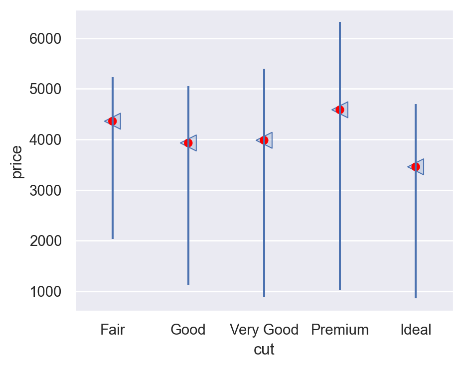
Exercises
clairy로price를 예측하는 모형을 세우고,- design matrix를 확인해보고,
clarity의 레벨에 따라 모형이 어떻게 예측하는지 살펴보세요.
diamonds["clarity"] = pd.Categorical(
diamonds["clarity"],
categories=["I1", "SI2", "SI1", "VS2", "VS1", "VVS2", "VVS1", "IF"],
ordered=True
)
Note
statsmodels
from statsmodels.formula.api import ols
mod2 = ols('price ~ clarity', data=diamonds).fit() # fit model
mod2.params # model parameters
from patsy import dmatrices
y, X = dmatrices("price ~ clarity", data=diamonds, return_type="dataframe")
X # design matrix
grid = pd.DataFrame({"clarity": ["I1", "SI2", "SI1", "VS2", "VS1", "VVS2", "VVS1", "IF"],})
mod2.predict(grid) # predictions
diamonds.groupby("clarity")["price"].mean() # average price by clarityscikit-learn
from sklearn.preprocessing import OneHotEncoder
enc = OneHotEncoder(sparse_output=False, drop="first")
X = enc.fit_transform(diamonds[["clarity"]]) # dummy coding
# enc.get_feature_names_out()
from sklearn.linear_model import LinearRegression
mod2 = LinearRegression().fit(X, diamonds["price"]) # fit model
print(mod2.coef_) # model parameters
print(mod2.intercept_)
grid = pd.DataFrame({"clarity": ["I1", "SI2", "SI1", "VS2", "VS1", "VVS2", "VVS1", "IF"],})
X_test = enc.transform(grid) # dummy coding for test data
mod2.predict(X_test) # predictionsInteractions
continuous and categorical
연속변수와 범주형 변수가 서로 상호작용하는 경우: ex. 운동량이 건강(지표)에 미치는 효과: 혼자 vs. 단체
Data: sim3.csv
sim3 = pd.read_csv("data/sim3.csv")
sim3 x1 x2 rep y sd
0 1 a 1 -0.57 2
1 1 a 2 1.18 2
2 1 a 3 2.24 2
3 1 b 1 7.44 2
.. .. .. ... ... ..
116 10 c 3 4.85 2
117 10 d 1 6.56 2
118 10 d 2 5.06 2
119 10 d 3 5.14 2
[120 rows x 5 columns]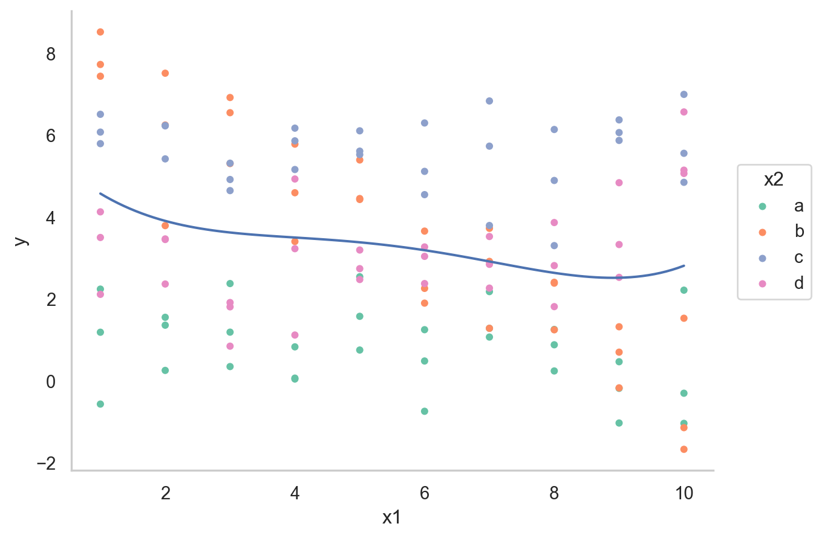
두 가지 모델로 fit할 수 있음
mod1 = ols('y ~ x1 + x2', data=sim3).fit()
mod2 = ols('y ~ x1 * x2', data=sim3).fit() # 같은 의미 'y ~ x1 + x2 + x1:x2'일반적으로 formula y ~ x1 * x2는 \(\hat{y} = a_0 + a_1x_1 + a_2x_2 + a_3x_1x_2\)로 변환됨

하지만, 여기서는 x2가 범주형 변수라 dummy-coding후 적용됨.
Design matrix를 확인해 보면,
y, X = dmatrices("y ~ x1 + x2", data=sim3, return_type="dataframe")
X.iloc[:, 1:] x2[T.b] x2[T.c] x2[T.d] x1
0 0.00 0.00 0.00 1.00
1 0.00 0.00 0.00 1.00
2 0.00 0.00 0.00 1.00
3 1.00 0.00 0.00 1.00
.. ... ... ... ...
116 0.00 1.00 0.00 10.00
117 0.00 0.00 1.00 10.00
118 0.00 0.00 1.00 10.00
119 0.00 0.00 1.00 10.00
[120 rows x 4 columns]y, X = dmatrices("y ~ x1 * x2", data=sim3, return_type="dataframe")
X.iloc[:, 1:] x2[T.b] x2[T.c] x2[T.d] x1 x1:x2[T.b] x1:x2[T.c] x1:x2[T.d]
0 0.00 0.00 0.00 1.00 0.00 0.00 0.00
1 0.00 0.00 0.00 1.00 0.00 0.00 0.00
2 0.00 0.00 0.00 1.00 0.00 0.00 0.00
3 1.00 0.00 0.00 1.00 1.00 0.00 0.00
.. ... ... ... ... ... ... ...
116 0.00 1.00 0.00 10.00 0.00 10.00 0.00
117 0.00 0.00 1.00 10.00 0.00 0.00 10.00
118 0.00 0.00 1.00 10.00 0.00 0.00 10.00
119 0.00 0.00 1.00 10.00 0.00 0.00 10.00
[120 rows x 7 columns]grid["mod1"] = mod1.predict(grid)
grid["mod2"] = mod2.predict(grid)
grid_long = grid.melt(id_vars=["x1", "x2"], var_name="model", value_name="pred")
grid_full = grid_long.merge(sim3[["x1", "x2", "y"]])grid_full x1 x2 model pred y
0 1 a mod1 1.67 -0.57
1 1 a mod1 1.67 1.18
2 1 a mod1 1.67 2.24
3 1 a mod2 1.21 -0.57
.. .. .. ... ... ...
236 10 d mod1 2.26 5.14
237 10 d mod2 3.98 6.56
238 10 d mod2 3.98 5.06
239 10 d mod2 3.98 5.14
[240 rows x 5 columns]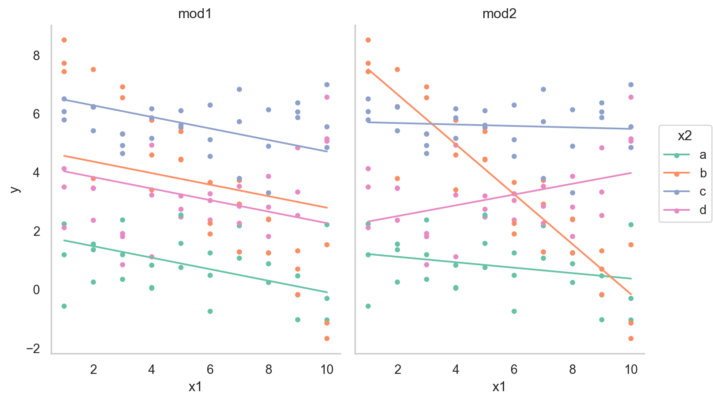
- interaction이 없는 모형 mod1의 경우, 네 범주에 대해 기울기가 동일하고 절편의 차이만 존재
- interaction이 있는 모형 mod2의 경우, 네 범주에 대해 기울기가 다르고 절편도 다름
\(y = a_0 + a_1x_1 + a_2x_2 + a_3x_1x_2\)에서 \(x_1x_2\)항이 기울기를 변할 수 있도록 해줌 \(y = a_0 + a_2x_2 + (a_1 + a_3x_2)x_1\)으로 변형하면, \(x_1\)의 기울기는 \(a_1 + a_3 x_2\)
Fitted models
mod1 = ols('y ~ x1 + x2', data=sim3).fit()
mod1.params
# Intercept 1.87
# x2[T.b] 2.89
# x2[T.c] 4.81
# x2[T.d] 2.36
# x1 -0.20
mod2 = ols('y ~ x1 * x2', data=sim3).fit() # 같은 의미 'y ~ x1 + x2 + x1:x2'
mod2.params
# Intercept 1.30
# x2[T.b] 7.07
# x2[T.c] 4.43
# x2[T.d] 0.83
# x1 -0.09
# x1:x2[T.b] -0.76
# x1:x2[T.c] 0.07
# x1:x2[T.d] 0.28두 모형을 비교하여 중 더 나은 모형을 선택하기 위해, residuals을 차이를 살펴보면,
sim3["mod1"] = mod1.resid
sim3["mod2"] = mod2.resid
sim3_long = sim3.melt(id_vars=["x1", "x2"], value_vars=["mod1", "mod2"], var_name="model", value_name="resid")
sim3_long x1 x2 model resid
0 1 a mod1 -2.25
1 1 a mod1 -0.49
2 1 a mod1 0.56
3 1 b mod1 2.87
.. .. .. ... ...
236 10 c mod2 -0.64
237 10 d mod2 2.59
238 10 d mod2 1.08
239 10 d mod2 1.16
[240 rows x 4 columns]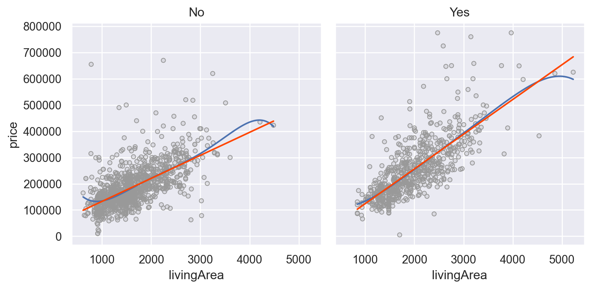
- 둘 중 어떤 모델이 더 나은지에 대한 정확한 통계적 비교가 가능하나 (잔차의 제곱의 평균인 RMSE나 잔차의 절대값의 평균인 MAE 등)
- 여기서는 직관적으로 어느 모델이 데이터의 패턴을 더 잘 잡아냈는지를 평가하는 것으로 충분
- 잔차를 직접 들여다봄으로써, 어느 부분에서 어떻게 예측이 잘 되었는지, 잘 안 되었는지를 면밀히 검사할 수 있음
- interaction 항이 있는 모형이 더 나은 모형
SaratogaHouses 데이터에서 가령, livingArea와 centralAir의 interaction을 살펴보면,
houses = sm.datasets.get_rdataset("SaratogaHouses", "mosaicData").data
(
so.Plot(houses, x='livingArea', y='price')
.add(so.Dots(color='.6'))
.add(so.Line(), so.PolyFit(5))
.add(so.Line(color="orangered"), so.PolyFit(1))
.facet("centralAir")
.layout(size=(8, 4))
)mod = ols('price ~ livingArea * centralAir', data=houses).fit()
mod.paramsIntercept 44977.64
centralAir[T.Yes] -53225.75
livingArea 87.72
livingArea:centralAir[T.Yes] 44.61
dtype: float64Two continuous
두 연속변수가 서로 상호작용하는 경우: ex. 강수량과 풍속이 항공편의 지연을 가중시킬 때
Data: sim4.csv
sim4 = pd.read_csv("data/sim4.csv")
sim4 x1 x2 rep y
0 -1.00 -1.00 1 4.25
1 -1.00 -1.00 2 1.21
2 -1.00 -1.00 3 0.35
3 -1.00 -0.78 1 -0.05
.. ... ... ... ...
296 1.00 0.78 3 1.52
297 1.00 1.00 1 1.49
298 1.00 1.00 2 3.79
299 1.00 1.00 3 -4.12
[300 rows x 4 columns]# make a grid of x1 and x2
from itertools import product
grid = pd.DataFrame(
list(
product(
np.linspace(sim4.x1.min(), sim4.x1.max(), 5),
np.linspace(sim4.x2.min(), sim4.x2.max(), 5),
)
),
columns=["x1", "x2"],
)
grid x1 x2
0 -1.00 -1.00
1 -1.00 -0.50
2 -1.00 0.00
3 -1.00 0.50
.. ... ...
21 1.00 -0.50
22 1.00 0.00
23 1.00 0.50
24 1.00 1.00
[25 rows x 2 columns]from statsmodels.formula.api import ols
mod1 = ols('y ~ x1 + x2', data=sim4).fit()
mod2 = ols('y ~ x1 * x2', data=sim4).fit() # 같은 의미 'y ~ x1 + x2 + x1:x2'mod2: y ~ x1 * x2는 \(\hat{y} = a_0 + a_1x_1 + a_2x_2 + a_3x_1x_2\) 로 변환되고,
변형하면, \(\hat{y} = a_0 + a_1x_1 + (a_2 + a_3x_1)x_2\)
grid["mod1"] = mod1.predict(grid)
grid["mod2"] = mod2.predict(grid)
grid_long = grid.melt(id_vars=["x1", "x2"], var_name="model", value_name="pred")grid_long x1 x2 model pred
0 -1.00 -1.00 mod1 1.00
1 -1.00 -0.50 mod1 -0.39
2 -1.00 0.00 mod1 -1.79
3 -1.00 0.50 mod1 -3.18
.. ... ... ... ...
46 1.00 -0.50 mod2 2.77
47 1.00 0.00 mod2 1.86
48 1.00 0.50 mod2 0.94
49 1.00 1.00 mod2 0.03
[50 rows x 4 columns]Regression plane for the model with interaction:
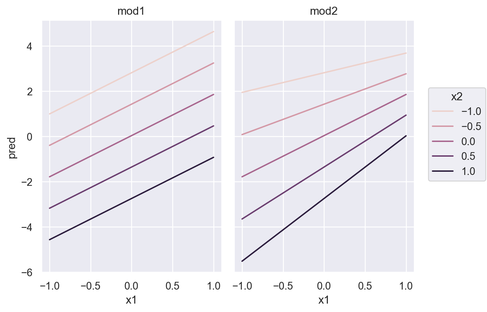
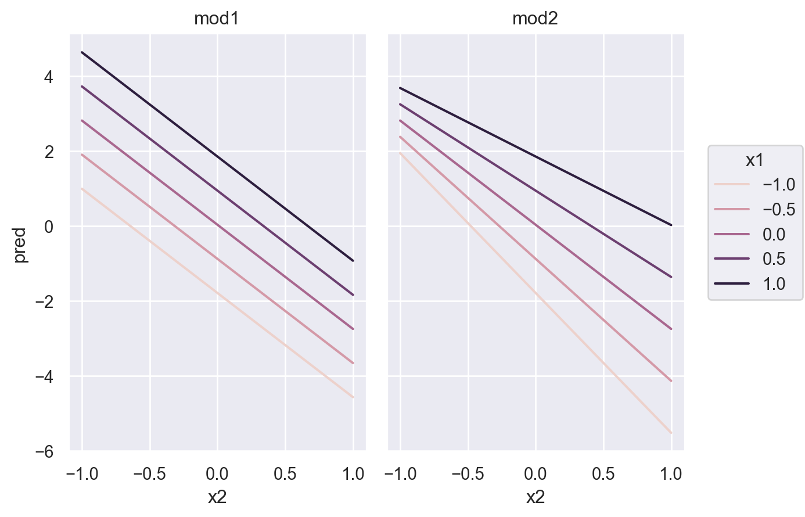
sim4["mod1"] = mod1.resid
sim4["mod2"] = mod2.resid
sim4_long = sim4.melt(id_vars=["x1", "x2"], value_vars=["mod1", "mod2"], var_name="model", value_name="resid")
sim4_long x1 x2 model resid
0 -1.00 -1.00 mod1 3.25
1 -1.00 -1.00 mod1 0.21
2 -1.00 -1.00 mod1 -0.64
3 -1.00 -0.78 mod1 -0.42
.. ... ... ... ...
596 1.00 0.78 mod2 1.09
597 1.00 1.00 mod2 1.47
598 1.00 1.00 mod2 3.77
599 1.00 1.00 mod2 -4.15
[600 rows x 4 columns]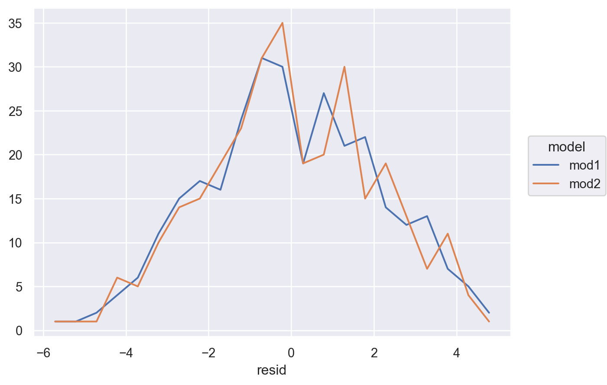
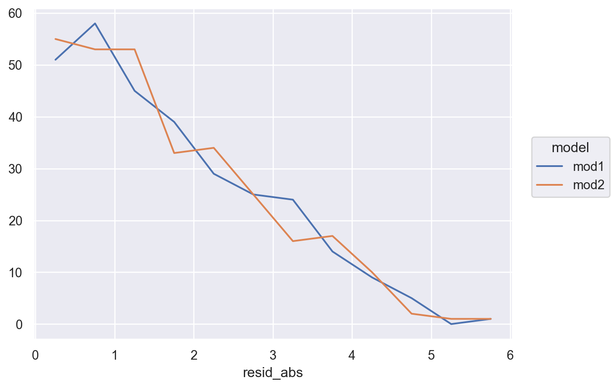
Transformations
Formula에서 직접 변수를 변환시킬 수 있음: patsy transform
Non-linear 형태의 모형을 linear 모형으로 분석할 수 있음.
y ~ x1 + x2np.log(y) ~ np.sqrt(x1) + x2→ \(\widehat{log(y)} = a_0 + a_1\sqrt{x_1} + a_2 x_2\)y ~ standardize(x1) * center(x2); (custom) 함수를 적용할 수 있음- formula 내에서
+, *, **, -가 산술의 의미를 가지려면,I()를 사용y ~ x + I(x**2)→ \(\hat{y} = a_0 + a_1 x + a_2 x^2 = a_0 + a_1x_1 + a_2x_2\)
ols("np.log2(price) ~ livingArea + I(livingArea**2)", data=houses)
Other model families
지금까지 선형모델에 대해 다루었고, 선형모델을 확장한 다양한 모델들이 존재 선형모델에 대한 원리를 충분히 이해하고 나면, 데이터 분석가로서 다른 변형된 모델을 이해하고 마스터하는 것은 어렵지 않음
- Generalised linear models: Linear models assume that the response is continuous and the error has a normal distribution. Generalised linear models extend linear models to include non-continuous responses (e.g. binary data or counts). They work by defining a distance metric based on the statistical idea of likelihood. (Binomial or Poisson distribution의 확률 모형을 결합)
- Generalised additive models, extend generalised linear models to incorporate arbitrary smooth functions. That means you can write a formula like
y ~ s(x)which becomes an equation likey = f(x)and letgam()estimate what that function is (subject to some smoothness constraints to make the problem tractable). - Penalised linear models, add a penalty term to the distance that penalises complex models (as defined by the distance between the parameter vector and the origin). This tends to make models that generalise better to new datasets from the same population.
- Robust linear models, tweak the distance to downweight points that are very far away. This makes them less sensitive to the presence of outliers, at the cost of being not quite as good when there are no outliers.
- Trees, attack the problem in a completely different way than linear models. They fit a piece-wise constant model, splitting the data into progressively smaller and smaller pieces. Trees aren’t terribly effective by themselves, but they are very powerful when used in aggregate by models like random forests or gradient boosting machines
Learning more about models
An Introduction to Statistical Learning (2e) by Gareth James, Daniela Witten, Trevor Hastie, and Robert Tibshirani, (available online for free). (1판 번역서)
This book presents a family of modern modelling techniques collectively known as statistical learning. For an even deeper understanding of the math behind the models, read the classic Elements of Statistical Learning by Trevor Hastie, Robert Tibshirani, and Jerome Friedman, (also available online for free).
Applied Predictive Modeling by Max Kuhn and Kjell Johnson, (번역서)
This book is a companion to the caret package and provides practical tools for dealing with real-life predictive modelling challenges.
Statistical Modeling: A Fresh Approach (2e) by Danny Kaplan, (available online for free).
This book provides a gentle introduction to modelling, where you build your intuition, mathematical tools, and R skills in parallel. The book replaces a traditional “introduction to statistics” course, providing a curriculum that is up-to-date and relevant to data science.